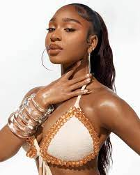
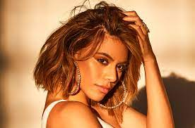
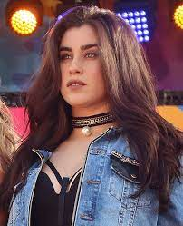

Fifth Harmony
 Fifth Harmony, often shortened to 5H, was an American girl group based in Miami, composed of Ally Brooke, Normani,
Dinah Jane, Lauren Jauregui, and Camila Cabello until her departure from the group in December 2016. Camila Cabello
was my favourite of the quintet.
The band was and still is my favourite band of all time because I could relate to their songs and it goes without
that their talents are impeccable.
Fifth Harmony, often shortened to 5H, was an American girl group based in Miami, composed of Ally Brooke, Normani,
Dinah Jane, Lauren Jauregui, and Camila Cabello until her departure from the group in December 2016. Camila Cabello
was my favourite of the quintet.
The band was and still is my favourite band of all time because I could relate to their songs and it goes without
that their talents are impeccable.
MY FAVOURITE SONGS
MEMBERS OF THE BAND
CAMILA CABELLO
Karla Camila Cabello Estrabao is an American singer and songwriter.
She rose to prominence as a member of the girl group Fifth Harmony,
which became one of the best-selling girl groups of all time.ALLY BROOKE
Allyson Brooke Hernandez is an American singer. She is a member of the girl group Fifth Harmony. In 2017, Brooke was featured
alongside rapper ASAP Ferg on the single "Look at Us Now" by Lost Kings. Afterwards, she released "Perfect" with DJ Topic- 
NORMANI
Normani Kordei Hamilton is an American singer, dancer, and songwriter. She rose to
fame as a member of the American girl group Fifth Harmony, which became one of the best-selling girl groups of all time.
- 
DINAH JANE
Dinah Jane Milika Ilaisaane Hansen is an American singer. She auditioned as a solo artist for the second season of The X Fact
or and a later became a member of Fifth Harmony, which went on to become one of the best-selling girl groups of all time.
- 
LAUREN JAUREGUI
Lauren Michelle Jauregui Morgado is an American singer and songwriter. She rose
to prominence as a member of the girl group Fifth Harmony, which became one of the best-selling girl groups of all time.